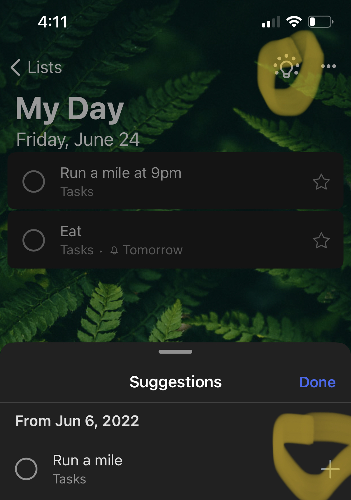

Wirecutter reviewed the best todo list apps and declared “ticktick” the winner. After all my research here’s what I’ve learned.
Types of Todo list apps
Programmers love wasting time making todo list apps apparently, because this is one wheel that’s reinvented by anyone with their own way of doing things. When at a FAANG company, I saw five different todo/project management applications.
Generally I observe that these apps fall into the following categories:
- Basic check lists: I Notes app
- Task managers: Todoist, To Do, Things3, TickTick
- Daily planners: Structured
- Project managers: Notion, Asana, Monday, GitHub Projects, Jira
- Automatic calendars: Motion and Reclaim.
Each has their strengths generally along the dimension of managing own work and managing work with others.
At the end of the day, I want to manage my own tasks. At work we use Jira and